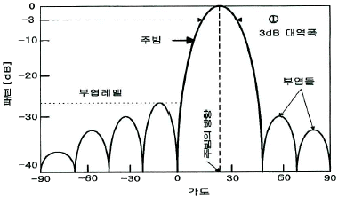
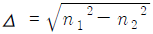
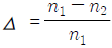
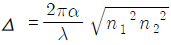
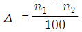
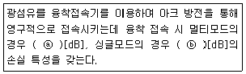
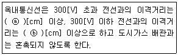

통신설비기능장 (2019-03-09 기출문제)
1과목: 임의 과목 구분(20문항)
1. 자동식 전화기의 단속비를 전류계법에 의하여 측정하였더니 평상시에 흐르는 전류는 120[mA] 이고, 전화기에 의한 임펄스 송출시에 흐르는 전류는40[mA] 이었다. 이 경우 브레이크(Break)율은 약 몇[%] 인가?
- 22.2
- 33.3
- 44.4
- 66.7
(정답률: 75%)

2. 다음 중 NO.7 신호방식에 대한 설명으로 적합하지 않은 것은?
- 동기방식은 동기 플래그를 사용한다.
- 64[kbps] 속도로 신호 전송이 가능하다.
- OSI-7 Layer 계층구조를 그대로 사용한다.
- 전화망, 데이터망, ISDN 등에 적용 가능하다.
(정답률: 83%)
3. 전자교환기에서 시스템의 총괄적인 유지보수 및 관리기능을 수행하는 서브시스템은?
- CDL(Central Data Link)
- CI(Control Interworking)
- CCS(Central Control Subsystem)
- LDL(Local Data Link)
(정답률: 90%)
4. 다음 중 에러를 검출하여 정정까지 할 수 있는 코드는?
- ASCⅡ 코드
- Parity 코드
- BCD 코드
- Hamming 코드
(정답률: 90%)
5. 8진 PSK의 위상차는 얼마인가?
- π
- π / 2
- π / 4
- π / 8
(정답률: 80%)
6. 펄스 변조방식 중 디지털형 펄스 변조방식으로 옳은 것은?
- PCM
- PAM
- PPM
- PWM
(정답률: 82%)
7. 다음 중 Nyquist 비를 만족하지 않았을 때 일어나는 사항이 아닌 것은?
- Spectrum Overlap
- Aliasing
- Spectrum Folding
- Phase Shift
(정답률: 83%)
8. 다중화 방식 중에서 보내고자 하는 신호를 그 주파수 대역보다 넓은 주파수 대역으로 확산시켜 전송하는 Spread Spectrum 방식을 사용하고, 각 사용자에게 서로 직교(Orthogonal)하는 고유의 코드를 부여하여 하나의 주파수 대역을 통해 여러 신호를 동시에 전송하는 방식은 무엇인가?
- 주파수분할 다중화(FDM)
- 시분할 다중화(TDM)
- 부호분할 다중화(CDM)
- 파장부할 다중화(WDM)
(정답률: 75%)
9. 다음 중 전송 부호가 갖추어야 할 요건이 아닌 것은?
- 직류 성분이 있을 것
- 전송신호로부터 비트동기를 위한 정보의 추출이 용이할 것
- 필요로 하는 대역폭이 가급적 좁을 것
- 유도 잡음의 영향을 받지 않을 것
(정답률: 69%)
10. 다음 중 데이터 전송제어에 관한 설명으로 알맞지 않은 것은?
- OSI 참조모델 네트워크 계층에서 수행하는 기능을 전송제어라 한다.
- 전송제어란 입출력제어, 회선제어, 동기제어, 에러제어를 총칭한다.
- SDLC와 HDLC는 전송제어 방식 중 비트방식 프로토콜에 해당한다.
- 에러제어란 전송도중 손실되는 데이터를 검출하여 재전송하거나 정정하는 제어를 말한다.
(정답률: 67%)
11. AM 송신기의 발진기 다음단에 설치하여 부하 변동에 따른 발진 주파수의 변동을 방지하기 위하여 사용하는 증폭 방식은 무엇인가?
- A급
- B급
- C급
- AB급
(정답률: 82%)
12. 다음 중 무선통신에서 변조를 행하는 이유로 옳지 않는 것은?
- 주파수 할당을 위하여 사용
- 방사를 어렵게 하기 위하여 사용
- 잡음과 간섭을 줄이기 위하여 사용
- 장비의 제한을 극복하기 위하여 사용
(정답률: 85%)
13. 안테나의 고유주파수를 높게 하려고 한다. 다음 중 가장 적합한 방법은?
- 안테나와 직렬로 콘덴서를 접속한다.
- 안테나와 병렬로 콘덴서르 접속한다.
- 안테나와 직렬로 코일을 접속한다.
- 안테나와 병렬로 코일을 접속한다.
(정답률: 77%)
14. 다음 중 λ/4 수직접지 안테나의 고유파장은?
- 안테나의 길이의 1/4배
- 안테나 길이의 1/2배
- 안테나 길이의 4배
- 안테나 길이의 2배
(정답률: 78%)
15. 다음 중 장거리 통신에 가장 적합한 전파는 어느 것인가?
- 지표파
- 회절파
- 직접파
- 전리층파
(정답률: 81%)
16. 다음 중 위성체에서 사용되는 안테나와 거리가 먼 것은?
- 혼 안테나
- 파라볼라 안테나
- 위상배열 안테나
- 역L형 안테나
(정답률: 85%)
17. 안테나에서 5[Km] 떨어진 곳에서 주빔의 방사전력 밀도가 1.27×10-6[W/m2]이었다. 이 때 안테나 입사전력이 100[W]였다면 안테나 이득은 몇[dB]인가?
- 4
- 5
- 6
- 7
(정답률: 64%)
18. 다음 중 이동통신시스템에서 기지국으로부터 거리에 따라 전파의 세기가 변화되는 현상은 무엇인가?
- Long-term 페이딩
- Short-term 페이딩
- 주파수 선택적 페이딩
- 지역확산
(정답률: 80%)
19. 다음 그림은 전형적인 안테나의 방사패턴이다. 설명으로 맞지 않는 것은?

- 주빔의 최대치의 방향은 안테나 빔의 방향이나 주사각도를 나타낸다.
- 주빔의 크기는 3[dB] 대역폭으로 결정한다.
- 주빔과 부엽의 크기차를 최대 부엽레벨 또는 부엽레벨이라고 하며, 단위는 [dB]이다.
- 주빔의 크기를 빔폭(beamwidth)이라고 하며 3차원 방사패턴을 자르는 방향에 따라 모두 같은 크기를 갖는다.
(정답률: 78%)
20. 사물인터넷 통신 기술 중에서 UWB에 대한 설명으로 틀린 것은?
- 저전력으로 넓은 주파수 대역을 사용하며 초당 400~500[Mbit]까지의 대용량 데이터 전송이 가능하다.
- 사용 주파수대역은 저주파수 대역(3.1~4.8[GHz]과 고주파수 대역(7.2~10.2[GHz])이다.
- 시스템이 단순하고 비용이 낮고 GPS보다 정확하게 위치를 인식할 수 있다.
- ISM 대역에서 작동하는 무선통신 기술로 낮은 데이터율과 네트워크 안전성을 요구하는 곳에 사용된다.
(정답률: 52%)
2과목: 임의 과목 구분(20문항)
21. 다음 중 통신프로토콜의 3가지 방식에 해당하지 않는 것은?
- 문자 방식
- 바이트 방식
- 비트 방식
- 레코드 방식
(정답률: 79%)
22. 다음 중 TCP(Transmission Cintrol Protocol)의 특성에 해당하지 않는 것은?
- 접속형(Connection-Oriented)
- 비연결형(Connectionless)
- 흐름제어(Flow Control)
- 혼잡제어(Congestion Control)
(정답률: 72%)
23. 다음은 OSI7 계층을 설명한 것이다.각 계층별 역항이 잘못 연결된 것은?
- 네트워크계층 : 통신노드에서 다양한 경로를 설정하고, 메시지등을 라우팅하며 망 노드간에 트래픽을 제어한다.
- 전송계층 : 종단간에 오류제어와 흐름제어를 수행하여 신뢰성 있는 정보를 전송한다.
- 세션계층 : 송신측과 수신측사이에 프로세서를 서로 연결유지해제하는 역할을 한다.
- 표현계층 : 사용자에게 직접 제공하는 서비스로서 제반적인 응용 작업 등의 서비스를 제공한다.
(정답률: 67%)
24. 다음 중 디지털 신호를 전송하는 LAN의 전송방식으로 적합한 것은?
- 기저대역(Baseband) 방식
- 광대역(Broadband) 방식
- 캐리어대역(Carrierband) 방식
- 하이브리드(Hybrid) 방식
(정답률: 83%)
25. 다음 LAN의 분류 중 네트워크 접속 형태에 의한 분류에 해당하지 않는 것은?
- 성형(Star)
- 링크형(Link)
- 버스형(Bus)
- 트리형(Tree)
(정답률: 80%)
26. 다음 중 일반적인 TCP/IP 프로토콜의 응용 서비스와 포트 번호의 연결이 적합하지 않은 것은?
- HTTP : 80
- DNS : 53
- FTP : 21
- TELNET : 25
(정답률: 87%)
27. 다음은 BcN의 킬러 어플리케이션으로 주목받는 IPTV에 관한 설명이다. IPTV의 서비스 형태와 거리가 먼 것은?
- 실시간 쌍방향 서비스
- 홈뱅킹 서비스
- 네비게이션(Navigation) 서비스
- T-OMMERCE(텔레비전 전자 상거래) 서비스
(정답률: 83%)
28. 다음 중 유비쿼터스 네트워크에서 주변 상황 정보를 획득, 전달하는 기반기술은?
- 디바이스 기술
- 네트워크 접속 기술
- 센싱 기술
- 암호화 기술
(정답률: 91%)
29. 다음 중 소프트스위치(Softswitch)의 기능에 속하지 않는 것은?
- 호 연결 서비스
- 교환기 호 제어
- 망 내에서 호 라우팅 수행
- 응용프로그램 운용
(정답률: 79%)
30. IPv4 네트워크 주소 체계의 범위가 옳게 나열된 것은?
- A class : 0.0.01 ~ 127.255.255.255
- B class : 128.1.0.0 ~ 191.255.255.255
- C class : 192.0.0.1 ~ 223.255.255.254
- D class : 224.0.0.0 ~ 239.255.255.254
(정답률: 79%)
31. 192.168.55.0의 네트워크 ID를 가지고 있다. 각 서브넷은 25개의 호스트 ID가 필요하며 가장 많은 서브네트를 가져야 한다. 어떤 서브넷 마스크가 알맞은가?
- 255.255.255.192
- 255.255.255.224
- 255.255.255.240
- 255.255.255.248
(정답률: 76%)
32. 일반 전화선이나 랜(LAN)의 환경을 이어주는 신호선의 한 종류이며 절연된 2개의 구리선을 서로 꼬아 만든 여러 개의 쌍 케이블로 외피를 플라스틱으로 절연시킨 케이블은 무엇인가?
- SPT 케이블
- UTP 케이블
- FTP 케이블
- CAT 케이블
(정답률: 88%)
33. 시외 통신케이블의 심선수가 500회선(Pair)일 때, 이 케이블의 심선은 어떤 구조로 구성되어 있는가?
- 쌍연
- 복합연
- 층연
- 유닛연
(정답률: 78%)
34. 비굴절률차에 대한 설명으로 옳은 것은?
- 비굴절률차가 클수록 광이 코어 내에 입사하기 쉽다.
- 비굴절률차가 적을수록 광이 코어 내에 입사하기 쉽다.
- 비굴절률차가 클수록 광이 클래드 내에 입사하기 쉽다.
- 비굴절률차가 적을수록 광이 클래드 내에 입사하기 쉽다.
(정답률: 70%)
35. 광섬유 코어 직경이 50[μm]인 계단형 광섬유가 갖는 모드 수는 약 몇 개인가? (단, 광파이버의 코어의 굴절률 n1=1.48, 클래드의 굴절률 n2=1.46일 때 파장 λ= 0.82[μm]이라 가정한다.)
- 47
- 539
- 1,079
- 2,157
(정답률: 72%)
36. 광케이블에서 비굴절률 차(?)를 나타내는 식은? (단, n1 : 코어 굴절률, n2 : 클래드 굴절률, α: 코어의 반지름)




(정답률: 84%)
37. 다음 중 광섬유의 종류에 대한 설명으로 틀린 것은?
- 단일모드 광섬유는 고속신호의 전송에 사용된다.
- 다중모드 광섬유는 낮은 부호 속도의 전송에 사용된다.
- 단일모드 광섬유는 광원과의 결합 효율이 높고, 광섬유끼리의 접속이 용이하다.
- 다중모드 광섬유는 여러 개의 모드가 전파 가능하다.
(정답률: 70%)
38. 다음 설명에서 괄호 안에 들어갈 알맞은 값은?

- ⓐ : 0.02, ⓑ : 0.02
- ⓐ : 0.02, ⓑ : 0.⑤
- ⓐ : 0.⑤, ⓑ : 0.02
- ⓐ : 0.⑤, ⓑ : 0.⑤
(정답률: 71%)
39. 음성 주파수 대역(300~3,400[Hz])을 완전히 전송하기 위해서는 최소한 몇 초 간격의 표본이 되어야 하는가?
- 125[μs]
- 147[μs]
- 300[μs]
- 3,400[μs]
(정답률: 57%)
40. 광섬유케이블의 접속손실이 상부국(A) → 하부국(B) 방향으로 측정한 값이 0.⑤[dB], 하부국(B) → 상부국(A) 방향으로 측정한 값이 0.15[dB]이다. 이 때 광섬유 케이블 접속점의 상, 하부측의 평균 접속손실은 몇 [dB]인가?
- 0.⑤
- 0.5
- 0.01
- 0.1
(정답률: 67%)
3과목: 임의 과목 구분(20문항)
41. 다음 중 통신 선로에서 펄스 시험기로 측정할 수 있는 것은?
- 통신선로의 고장점 측정
- 펄스 주기 측정
- 레헤르선 파장계의 고장점 측정
- 유선통신선로에 진행하고 있는 주파수 측정
(정답률: 80%)
42. 특성임피던스가 200[Ω]인 동축케이블의 무손실 선로에서 50[Ω]의 부하를 접속할 때 이 선로의 정재파비는?
- 0.6
- 1.2
- 3.2
- 4
(정답률: 85%)
43. 도시권 이더넷 망으로 광케이블을 통해 직접 연결되어 있어 광 네트워크의 속도 서비스를 빠르게 이용할 수 있는 개선된 망구조는?
- Local Area Network
- ExtraNet
- Hybrid Fiber Coaxial
- Metro Ethernet
(정답률: 78%)
44. 다음 중 “초고속정보통신건물 인증업무”의 광섬유 케이블 링크성능 기준으로 틀린 것은? (문제 오류로 실제 시험에서는 1, 3, 4번이 정답처리 되었습니다. 여기서는 1번을 누르면 정답 처리 됩니다.)
- 1,310[nm] : 6.5 [dB]이하
- 1,550[nm] : 5.5 [dB]이하
- 850[nm] : 7.5 [dB]이하
- 1,300[nm] : 11.5 [dB]이하
(정답률: 79%)
45. 광섬유는 입사단에 고출력의 광 펄스를 입사시키며 입사된 광 펄스의 일부가 산란되어 입사단 쪽으로 되돌아오는데 이 빛을 이용하여 광섬유의 길이를 구할 수 있다. 굴절률 n=1.48, t=1 [μsec]라고 할 때 광섬유의 길이는 약 얼마인가?
- 57.6[m]
- 101.4[m]
- 153.5[m]
- 202.7[m]
(정답률: 60%)
46. 어느 전송 선로의 입력측 전압이 9[V], 출력측 전압이 0.09[V]였다면 선로의 감쇄량은?
- 0.01[dB]
- 1[dB]
- 20[dB]
- 40[dB]
(정답률: 51%)
47. 다음 중 용역업자가 해당 공사 전반에 관한 감리업무를 총괄하는 자를 배치하는 기준으로 잘못된 것은?
- 총공사금액 10억원 미만의 공사 : 초급감리원 이상의 감리원
- 총공사금액 30억원 이상 70억원 미만인 공사 : 고급감리원 이상의 감리원
- 총공사금액 70억원 이상 100억원 미만인 공사 : 특급감리원
- 총공사금액 100억원 이상 공사 : 특급감리원(기술사자격을 가진 자로 한정한다.)
(정답률: 84%)
48. 다음 중 정보통신공사업자의 시공능력 평가방법으로 잘못된 것은?
- 공사실적액은 당해 공사업자의 수급금액에서 하수급금액은 제외한다.
- 실질자본금은 해당 공사업자의 최근 결산일 현재의 총자산에서 총부채를 뺀 금액을 말한다.
- 전년도 공사업계의 기술자 1명당 평균생산액은 공사업계의 국내 총기성액을 공사업계에 종사하는 기술자의 총수로 나눈 금액으로 한다.
- 보유기술인력은 해당 공사업체를 평가하는 해의 전년도 말일을 기준으로 소속되어 전년도 1월 1일부터 12월 31일까지 중 180일 이상 근무한 자에 한한다.
(정답률: 73%)
49. 다음 중 “접지설비구내통신설비선로설비 및 통신공동구등에 대한 기술기준”에서 정하는 '중간단자항 또는 세대단자함'의 요건에 대한 설명으로 틀린 것은?
- 꼬임케이블의 절연 저항은 10[MΩ] 이상
- 꼬임케이블의 접속 저항은 0.01[Ω] 이하
- 광섬유케이블의 단자 또는 접속 어댑터의 삽입손실은 0.5[dB] 이하
- 절연저항 측정조건은 상온 및 상습상태에서 보호지지물과 접속자간 및 접속자 상호간
(정답률: 75%)
50. 다음 중 홈네트워크 설비 중 폐쇄회로텔레비전장비의 설치에 대한 설명이 틀린 것은?
- 폐쇄회로텔레비전장비의 카메라는 주차장, 주동출입구, 어린이놀이터, 엘리베이터 등에 설치할 것을 권장한다.
- 폐쇄회로텔레비전장비를 설치하는 때에는, 설치되는 대상시설의 주요부분 등이 조망될 수 있게 설치하여야 한다.
- 폐쇄회로텔레비전의 영상은 보안용으로만 사용하고 거주자에게 제공하여서는 아니 된다.
- 렌즈를 포함한 폐쇄회로텔레비전장비는 결로되거나 빗물이 스며들지 않도록 설치하여야 한다.
(정답률: 90%)
51. 다음 중 공동주택에서 지능형 홈네트워크 설치하는 경우에 갖추어야 할 설비에 해당되지 않는 것은?
- 홈네트워크망 : 단지망 및 세대망
- 단독출입 시스템 : 댁내 출입시스템 및 원격검침시스템
- 원격제어기기 : 가스밸브 및 조명/난방 제어기
- 감지기 : 가스 및 개폐 감지기
(정답률: 78%)
52. 다음 중 방재실에 관한 설명으로 틀린 것은?
- 항온 및 항습장치를 설치하여야 한다.
- 보안을 위하여 독립된 출입문을 설치하고, 외부로부터 전파유입이 없도록 차폐체를 설치하여야 한다.
- 바닥은 이중바닥방식으로 시설한다.
- 단지 내 방범, 방재, 안전 등을 위한 설비를 설치하기 위한 공간이다.
(정답률: 83%)
53. 타인에게 등록증이나 등록수첩을 빌려 준 자 또는 타인의 등록증이나 등록수첩을 빌려서 사용한 자에 대한 벌칙은?
- 500만원 이하의 벌금
- 1,000만원 이하의 과태료
- 1년 이하의 징역 또는 1천만원 이하의 벌금
- 3년 이하의 징역 또는 2천만원 이하의 벌금
(정답률: 86%)
54. 옥내통신선의 이격거리에 대한 설명이다. 다음 괄호 안에 들어갈 알맞은 값은?

- ⓐ : 6 ⓑ : 15
- ⓐ : 15 ⓑ : 6
- ⓐ : 30 ⓑ : 60
- ⓐ : 60 ⓑ : 30
(정답률: 73%)
55. 정보통신공사업법에서 설계도서의 보관의무에 대한 설명으로 틀린 것은?
- 공사를 설계한 용역업자는 그가 작성 또는 제공한 실시설계도서를 해당 공사가 준공될 때까지 보관
- 공사의 목적물의 소유자는 공사에 대한 실시준공설계도서를 공사의 목적물이 폐지될 때까지 보관
- 소유자가 보관하기 어려운 사유가 있을 때는 관리주체가 보관
- 공사를 감리한 용역업자는 그가 감리한 공사의 준공설계도서를 하자담보책임기간이 종료될 때까지 보관
(정답률: 78%)
56. 규격에 정의된 합격품질기준(AQL) 표에 따라 샘플의 개수 및 검사 방법을 결정하는 샘플링 방법은?
- 상대적 샘플링 검사
- 수치적 샘플링 검사
- 층별 샘플링 검사
- 계수조정형 샘플링 검사
(정답률: 77%)
57. 모집단이 서브 로트로 구성되어 있는 경우, 일부 로트를 랜덤 샘플링 한 후 샘플링된 로트에서 다시 최종 샘플을 몇 개씩 샘플링하는 방법은?
- 2단계샘플링
- 계통샘플링
- 지그재그샘플링
- 층별샘플링
(정답률: 74%)
58. 다음 중 계량형 관리도에 속하는 것은?
- U 관리도
- P 관리도
- X 관리도
- C 관리도
(정답률: 71%)
59. 특수용도의 통신단말기를 대량으로 제조하고자 한다. 해당 제품은 표준화가 이루어져 있고, 원활한 원자재 공급이 가능하다. 따라서 컨베이어라인을 구성한 계획이다. 이것은 어떠한 설비배치 형태인가?
- 셀형 배치
- 고정위치 배치
- 공정별 배치
- 제품별 배치
(정답률: 74%)
60. 다음 중 공정의 개선 활동을 위해 사용되는 ECRS의 원칙이 아닌 것은?
- 배제의 원칙
- 결합/분리의 원칙
- 회귀의 원칙
- 단순화의 원칙
(정답률: 72%)
Break율 = (평상시 전류 - 임펄스 송출시 전류) / 평상시 전류 × 100
여기에 주어진 값들을 대입하면,
Break율 = (120[mA] - 40[mA]) / 120[mA] × 100 = 66.7[%]
따라서 정답은 "66.7" 이다.